Click a highlighted definition to read it here without losing your place. Follow section numbers alongside the original PDF.
Find lecture practice in this chapter (8)
- L12 · Understand the limits of static checking
- L13 · Read a typing rule as a derivation
- L14 · Treat annotations as claims to verify
- L15 · Separate inference from runtime prediction
- L16 · Share binder types and keep fresh unknowns distinct
- L17 · Normalize before solving and after solving
- L18 · Keep polymorphism within its assumptions
- L19 · Typed objects and safe subtyping
Expand a practice panel for its example, Mermaid flow, and self-check.
Chapter cheat sheet
Main idea, definitions, and solving steps
The main idea: Predict permitted operations without running the program by generating and solving type constraints.
| Key term | Concise meaning |
|---|---|
| Type environment Γ | Maps identifiers to types, or type schemes in a polymorphic system. |
| Type variable α | An unknown type constrained by the program. |
| Substitution S | Maps type variables to types and acts recursively through compound types. |
| Unification | Solves equations by making both sides structurally equal. |
| Occurs check | Rejects α = T when α occurs inside T, preventing an infinite simple type. |
| Type scheme | Quantifies variables that can be instantiated freshly at each use. |
Rule to remember: Γ ⊢ e : τ. A call f a with result β requires type(f) = type(a) → β. Generalize only FTV(τ) − FTV(Γ).
Small example: For fun x -> x + 1, addition forces x:int, so the function has type int → int.
How to solve problems:
- Assign fresh unknowns and generate equations from syntax.
- Normalize equations using the current substitution.
- Decompose function types, check occurrences, and reject incompatible constructors.
- Apply the full substitution to the root type; generalize only in the polymorphic extension.
Common trap: A type checker checks both IF branches. Successful typing does not prove termination or that HEAD NIL and division by zero are safe.
Read the chapter in the original PDF · Continue to the detailed sections
Syntax and code companion
Use the syntax reference to trace a symbol to its meaning and source.
Static typing judgment · Constraint generation V · Type substitution versus term substitution · Type constructors and unknowns
Line-by-line code · The stages of type inference
OCaml algorithm fragment; gen, solve, apply, empty_context, and fresh_tyvar are interpreter-specific helpers
let typeof expression =Analyze syntax without executing it.
let target = fresh_tyvar () inCreate an unknown result type.
let equations = gen empty_context expression target inGenerate constraints in an empty type context.
let substitution = solve equations inUnify; mismatch or an occurs-check failure raises TypeError.
apply substitution targetNormalize the result using the complete solution.
Trace result: For identity applied to 1, constraints force int. These helper names describe a design, not provided HW4 functions.
Before you begin
Read in the PDF: Chapter 8, pp. 223–276. Goal: derive and solve the conditions under which a program has a type. Definitions: type environment, unification, occurs check, type scheme.
8.1 Target Language
The initial language returns to a small pure core: numbers, variables, arithmetic, a zero test, conditionals, let, procedures, and calls. Reducing the language lets you focus on typing rules before extending them to Fun. A type checker analyzes the syntax tree; it does not run the program to discover what a variable happens to contain.
The same tree, different questions:
| Analysis of an expression | What it carries | What it produces | What IF does |
|---|---|---|---|
| Pure evaluation | Runtime values in ρ | A value or runtime failure; it may diverge | Runs the selected branch |
| Stateful evaluation | Environment and memory | A value plus updated memory, or failure/divergence | Runs the selected branch with the guard’s memory |
| Type inference | Types in Γ and fresh unknowns | A type or a typing rejection | Checks both branches for compatible types |
A runtime test and a typing derivation answer different questions; one cannot substitute for the other.
Understand the limits of static checking Lecture 12
- Perfect automatic prediction of arbitrary program behavior is undecidable; useful restricted analyses remain possible.
- A sound type system may reject some programs that would execute safely.
Source slides: p. 3 · p. 5 · p. 6 · p. 7 · p. 8 · p. 9
Practice with Lecture 12 · example, thinking flow, and self-check
Rule in context: accepted ⇒ no specified runtime type error; safe ⇏ necessarily accepted
Static typing judgment · Type constructors and unknowns
Worked example: A checker that requires both IF branches to have one type rejects if true then 1 else false even though this particular execution selects the integer branch.
Thinking steps:
- Name the runtime errors being excluded.
- Choose a tractable typing discipline.
- Check before running.
- Interpret rejection within the discipline.

View Mermaid source
%%{init: {"flowchart": {"wrappingWidth": 600}}}%%
flowchart TD
accTitle: Lecture 12 reasoning route
accDescr: Numbered stages for applying why static types?.
N0["1. Name the runtime errors being excluded"]
N1["2. Choose a tractable typing discipline"]
N0 --> N1
N2["3. Check before running"]
N1 --> N2
N3["4. Interpret rejection within the discipline"]
N2 --> N3
Homework connection: HW4: understand what successful typeof promises and why an untypable expression raises TypeError.
HW4 thinking guide · Full homework map
Try it: Does a sound type checker prove a program terminates?
Reveal the explanation
No. A well-typed recursive program may diverge.
8.2 Type
Types include int, bool, and function types a -> b. An unknown type variable α represents a type to be determined, not an arbitrary runtime value. The type of a function describes the relation between acceptable argument types and returned result types.
For fun x -> x+1, addition constrains x to int and the result is int; hence int -> int. For fun x -> x, input and result must be the same unknown type, producing α -> α.
8.3 Type Environment
A type environment Γ maps names to types. This is distinct from the runtime environment ρ, which maps names to values or locations. Typing VAR x consults Γ. Typing a procedure extends Γ with its parameter's type before analyzing the body.
8.4 Type Inference Rules
The judgment Γ ⊢ e : t means e has type t under Γ. Addition requires two integer operands and returns int. A conditional requires a boolean condition and equal branch types. A call requires a function whose parameter type matches the argument type.
Both branches of IF are checked even though evaluation runs only one. Typing is a static structural analysis; it normally does not use a concrete condition value to excuse a mistyped branch.

View Mermaid source
flowchart TD
accTitle: Chapter 8 - typing a call relates three types
accDescr: The function must accept the argument type and return the type requested for the whole call.
A["CALL f arg has desired result r"] --> B["Choose fresh argument type a"]
B --> C["Require f : a to r"]
B --> D["Require arg : a"]
C --> E["Solve both requirements together"]
D --> E
Read a typing rule as a derivation Lecture 13
- The context Γ maps variables to types, not runtime values.
- The declarative rules may permit multiple types for one expression.
Source slides: p. 4 · p. 5 · p. 7 · p. 9 · p. 12 · p. 14 · p. 15
Practice with Lecture 13 · example, thinking flow, and self-check
Rule in context: Γ,x:α ⊢ e:β ⇒ Γ ⊢ proc x e:α→β; Γ ⊢ f:α→β and Γ ⊢ a:α ⇒ Γ ⊢ f a:β
Static typing judgment · Type constructors and unknowns · Lookup and map extension
Worked example: proc x (if x then 11 else 22) has bool → int: the guard forces x to bool and both branches have int.
Thinking steps:
- Choose the rule for the outer constructor.
- Write its required premise types.
- Extend the context for binders.
- Derive premises bottom up.
- Check the conclusion type.

View Mermaid source
%%{init: {"flowchart": {"wrappingWidth": 600}}}%%
flowchart TD
accTitle: Lecture 13 reasoning route
accDescr: Numbered stages for applying designing typing rules.
N0["1. Choose the rule for the outer constructor"]
N1["2. Write its required premise types"]
N0 --> N1
N2["3. Extend the context for binders"]
N1 --> N2
N3["4. Derive premises bottom up"]
N2 --> N3
N4["5. Check the conclusion type"]
N3 --> N4
Homework connection: HW4: derive one rule per AST constructor before implementing inference.
HW4 thinking guide · Full homework map
Try it: Why cannot Γ simply contain runtime values?
Reveal the explanation
Typing runs before execution and tracks types; values belong to the runtime environment.
8.5 Type Checker Implementation Approach
An evaluator often computes children and combines concrete values immediately. A checker cannot always know a procedure parameter's type before it examines the body and its uses. One approach asks the programmer for annotations. Automatic inference instead introduces unknowns and collects equations to solve later.
This separation avoids guessing types or trying every possible function type. The syntax determines constraints; the solver propagates consequences across distant uses of the same unknown.
Treat annotations as claims to verify Lecture 14
- Recursive functions need an assumed signature while checking their own bodies.
- The body must agree with the declared result; an annotation is a claim to verify.
Source slides: p. 3 · p. 4 · p. 5 · p. 7 · p. 8
Practice with Lecture 14 · example, thinking flow, and self-check
Rule in context: check(proc (x:α) e, Γ) = α → check(e, Γ[x ↦ α])
Static typing judgment · Type constructors and unknowns · Functions and application
Worked example: proc (x:int) (x + 1) checks as int → int. proc (x:bool) (x + 1) is rejected because arithmetic requires int.
Thinking steps:
- Read the declared parameter types.
- Extend the type context.
- Check the body recursively.
- Compare against required result types.

View Mermaid source
%%{init: {"flowchart": {"wrappingWidth": 600}}}%%
flowchart TD
accTitle: Lecture 14 reasoning route
accDescr: Numbered stages for applying manual type annotations.
N0["1. Read the declared parameter types"]
N1["2. Extend the type context"]
N0 --> N1
N2["3. Check the body recursively"]
N1 --> N2
N3["4. Compare against required result types"]
N2 --> N3
Homework connection: Preparation for HW4, whose unannotated expressions require fresh unknowns and constraints instead of asking the user for annotations.
HW4 thinking guide · Full homework map
Try it: Can the checker trust an annotation without checking the body?
Reveal the explanation
No. Otherwise inconsistent annotations could admit unsafe operations.
8.6 Automatic Type Inference Algorithm
The pipeline is: allocate a fresh type for the whole expression, generate equations, solve them, then apply the resulting substitution to the requested type. A substitution maps type variables to types and must act recursively inside function and list types.
Small complete trace: infer the type of the identity procedure applied to 1. The provisional result is α and its parameter type is β.
| Stage | Information | Why |
|---|---|---|
| Type the identity body | Procedure type β → β | The body returns its parameter |
| Type the argument | int | It is the literal 1 |
| Constrain application | β → β = int → α | Callee domain matches argument; codomain matches result |
| Decompose | β=int and β=α | Function types compare both components |
| Propagate | α=int | Replace β consistently in the remaining equation |
| Report | int | Apply the complete solution to the root α |
The next two subsections separate how these equations are generated from how they are solved.
Separate inference from runtime prediction Lecture 15
- Use fresh type variables for unknown parameter and expression types.
- Soundness/completeness of inference relative to a type system is different from completeness for all runtime-safe programs.
Source slides: p. 2 · p. 3 · p. 4 · p. 5 · p. 7 · p. 9 · p. 10
Practice with Lecture 15 · example, thinking flow, and self-check
Rule in context: f a : β contributes type(f) = type(a) → β
Static typing judgment · Type constructors and unknowns · Type substitution versus term substitution
Worked example: proc f (proc x (f (x + 1))) forces x:int and f:int→β, giving (int→β)→int→β.
Thinking steps:
- Assign fresh unknown types.
- Generate equations from each use.
- Solve compatible equalities.
- Apply the solution to the result type.

View Mermaid source
%%{init: {"flowchart": {"wrappingWidth": 600}}}%%
flowchart TD
accTitle: Lecture 15 reasoning route
accDescr: Numbered stages for applying type inference i: the idea.
N0["1. Assign fresh unknown types"]
N1["2. Generate equations from each use"]
N0 --> N1
N2["3. Solve compatible equalities"]
N1 --> N2
N3["4. Apply the solution to the result type"]
N2 --> N3
Homework connection: HW4: plan fresh_tyvar use and expected constraints for each constructor.
HW4 thinking guide · Full homework map
Try it: Is a type variable a variable in the interpreted program?
Reveal the explanation
No. It is an unknown in the checker's description of types.
8.6.1 Generating Type Equations
Let G(Γ,e,t) produce the conditions for e to have expected type t. A constant adds t = int. A variable adds t = Γ(x). A procedure introduces fresh a and b, adds t = a -> b, and generates the body at b under Γ[x ↦ a]. A monomorphic let introduces one fresh type shared by the definition and all uses in its body.
Worked example: infer fun f -> fun x -> f (x+1).
- Give f type α and x type β.
- Addition requires β = int and returns int.
- Give the call result type γ; application requires α = int → γ.
- The outer result is
(int → γ) → int → γ.

View Mermaid source
flowchart TD
accTitle: Chapter 8 - derive the type of a higher-order function
accDescr: Integer addition constrains x, then application constrains f, and the nested procedures form the final function type.
A["f has alpha; x has beta"] --> B["x+1 requires beta = int"]
B --> C["f applied to int returns gamma"]
C --> D["alpha = int to gamma"]
D --> E["Whole type: (int to gamma) to int to gamma"]
Share binder types and keep fresh unknowns distinct Lecture 16
- Binder occurrences share the type recorded in Γ; do not invent a new type for every use of the same monomorphic variable.
- Generation can succeed even when the resulting equations are inconsistent.
Source slides: p. 4 · p. 5 · p. 6 · p. 7 · p. 8 · p. 9 · p. 10
Practice with Lecture 16 · example, thinking flow, and self-check
Rule in context: V(Γ, f a, t) = V(Γ,f,α→t) ∪ V(Γ,a,α), with fresh α
Constraint generation V · Static typing judgment · Type constructors and unknowns
Worked example: For (proc x x) 1 with target β, generate the procedure's parameter/result equality and int for the argument. Solving forces β=int.
Thinking steps:
- Receive context expression and target type.
- Match the expression constructor.
- Create fresh child unknowns.
- Generate child constraints in proper contexts.
- Union the constraints.

View Mermaid source
%%{init: {"flowchart": {"wrappingWidth": 600}}}%%
flowchart TD
accTitle: Lecture 16 reasoning route
accDescr: Numbered stages for applying type inference ii: constraint generation.
N0["1. Receive context expression and target type"]
N1["2. Match the expression constructor"]
N0 --> N1
N2["3. Create fresh child unknowns"]
N1 --> N2
N3["4. Generate child constraints in proper contexts"]
N2 --> N3
N4["5. Union the constraints"]
N3 --> N4
Homework connection: HW4: implement a constraint generator before unification; add the starter's list and recursive-function cases.
HW4 thinking guide · Full homework map
Try it: Should two independent procedure parameters receive the same fresh type variable?
Reveal the explanation
No. They become equal only if a constraint requires it.
8.6.2 Solving Type Equations
Unification repeatedly normalizes both sides under the current substitution. Equal types need no work. Function types decompose into parameter and result equations. A variable can be bound to a type if it does not occur inside that type. Different concrete constructors, such as int and bool, fail.
The occurs check rejects α = α -> β, which would require an infinite type in this finite simple-type system. Self-application fun x -> x x produces precisely this kind of equation.
View Mermaid source
flowchart TD
accTitle: Chapter 8 - unification decision tree
accDescr: Normalize an equation, then delete, decompose, bind with an occurs check, or reject incompatible constructors.
A["Apply current substitution to both sides"] --> B{"Same type?"}
B -->|Yes| C["Discard equation"]
B -->|No| D{"One side a variable?"}
D -->|Yes| E{"Variable occurs in other side?"}
E -->|Yes| F["Reject infinite type"]
E -->|No| G["Bind variable and update substitution"]
D -->|No| H{"Matching function or list constructors?"}
H -->|Yes| I["Enqueue component equations"]
H -->|No| J["Reject constructor mismatch"]
Worked substitution: from α = β and β = int, the final answer must make α int too. Keeping the first association without recursively applying or composing later substitutions would leave a stale variable. The solution file both normalizes existing entries and recursively applies substitutions.
Normalize before solving and after solving Lecture 17
- Normalize both sides using the current substitution before comparing.
- Apply the final substitution to the provisional result type, not just to the remaining constraints.
Source slides: p. 13 · p. 15 · p. 16 · p. 21 · p. 23 · p. 25 · p. 26
Practice with Lecture 17 · example, thinking flow, and self-check
Rule in context: unify(α, int) gives [α↦int]; unify(α, α→β) fails; S(t1→t2)=S(t1)→S(t2)
Type substitution versus term substitution · Constraint generation V · Type constructors and unknowns
Worked example: α=β→β and β=int give α=int→int. For proc f (f f), the equation α=α→β fails the occurs check under finite simple types.
Thinking steps:
- Apply the current substitution.
- Discard identical sides.
- Decompose matching constructors.
- Reject mismatch or occurs-check failure.
- Compose and propagate a new binding.

View Mermaid source
%%{init: {"flowchart": {"wrappingWidth": 600}}}%%
flowchart TD
accTitle: Lecture 17 reasoning route
accDescr: Numbered stages for applying type inference iii: unification.
N0["1. Apply the current substitution"]
N1["2. Discard identical sides"]
N0 --> N1
N2["3. Decompose matching constructors"]
N1 --> N2
N3["4. Reject mismatch or occurs-check failure"]
N2 --> N3
N4["5. Compose and propagate a new binding"]
N3 --> N4
Homework connection: HW4: substitution, unification, occurs check, final result normalization, and TypeError tests.
HW4 thinking guide · Full homework map
Try it: Why is α=α harmless but α=α→β rejected?
Reveal the explanation
The first is identity. The second requires an infinite type in this finite-type system.
8.7 Polymorphic Type Systems
A single monomorphic unknown is shared by all uses of a binding. Thus using the same identity function on both an integer and a boolean can force an inconsistent equation. Let-polymorphism instead associates the binding with a type scheme and creates fresh instances at each use.
The key rule is generalize(Γ,t) = ∀(FTV(t) − FTV(Γ)).t. Only variables independent of the surrounding type environment may be generalized. Ordinary procedure parameters remain monomorphic. At lookup, instantiate the quantified variables with fresh unknowns; do not freshen the unquantified environment-dependent variables.

View Mermaid source
flowchart TD
accTitle: Chapter 8 - distinguish a shared unknown from a polymorphic scheme
accDescr: A solved let-bound identity can generalize its independent variable, and each use then gets a fresh instance.
A["Infer let-bound identity: alpha to alpha"] --> B["Solve constraints and apply them to the environment"]
B --> C["Generalize alpha only if absent from environment free variables"]
C --> D["Store scheme: forall alpha, alpha to alpha"]
D --> E["Integer use gets fresh beta: beta=int"]
D --> F["Boolean use gets fresh gamma: gamma=bool"]
The downloadable §8.8 checker deliberately implements the initial monomorphic equation system and a monomorphic Fun extension. This section explains the separate let-polymorphic extension; the file is not presented as an OCaml-equivalent polymorphic type checker. See the detailed polymorphism chapter for further worked cases.
Keep polymorphism within its assumptions Lecture 18
- Procedure parameters remain monomorphic in the presented let-polymorphic system.
- The pure-language rule cannot be transferred blindly to mutable references; practical OCaml uses a value restriction.
Source slides: p. 2 · p. 6 · p. 8 · p. 11 · p. 12 · p. 13 · p. 14
Practice with Lecture 18 · example, thinking flow, and self-check
Rule in context: Gen(Γ,t)=∀(FTV(t)−FTV(Γ)).t; Inst(∀α.t)=t[α↦fresh β]
Quantified type schemes · Type substitution versus term substitution · Static typing judgment
Worked example: let id = proc x x in if id true then id 11 else id 22 uses independent bool→bool and int→int instances. A monomorphic id would force bool=int and fail.
Thinking steps:
- Infer and solve the let initializer.
- Apply substitutions to type and context.
- Generalize variables absent from the context.
- Bind the identifier to its generalized scheme.
- Instantiate freshly at every use.
View Mermaid source
%%{init: {"flowchart": {"wrappingWidth": 600}}}%%
flowchart TD
accTitle: Lecture 18 reasoning route
accDescr: Numbered stages for applying let-polymorphism.
N0["1. Infer and solve the let initializer"]
N1["2. Apply substitutions to type and context"]
N0 --> N1
N2["3. Generalize variables absent from the context"]
N1 --> N2
N3["4. Bind the identifier to its generalized scheme"]
N2 --> N3
N4["5. Instantiate freshly at every use"]
N3 --> N4
Homework connection: HW4 handout does not settle every polymorphism policy. Implement the required policy explicitly; this lecture explains the extension rather than silently changing the assignment contract.
HW4 thinking guide · Full homework map
Try it: Can a type variable free in Γ be quantified at this let?
Reveal the explanation
No. It represents a dependency on the surrounding context.
8.8 Implementation
Read in the PDF: pp. 274–276. Download the complete generator, solver, and Fun extension. Run ocaml textbook_types.ml.
Task 1 — gen_equations
Generate one group of constraints for each constructor using the rules above. Pass the expected type down the tree. Procedure definitions introduce fresh input and output types; calls introduce a fresh argument type; conditionals check the guard at bool and both branches at the same expected type. An unknown variable name is a typing error, not a fresh free identifier.
Task 2 — solve and typecheck
Maintain a worklist and a substitution. Normalize before each comparison, decompose compound types, perform the occurs check before extending, and reject incompatible constructors. Finally apply the solved substitution to the root's fresh type. Tests cover chained substitutions, function decomposition, unbound names, incompatible branches, and self-application.
Task 3 — Extend to Fun
Add Unit and list types. NIL has list α for a fresh α; CONS requires a head of type α and tail of type list α; APPEND requires matching list types; HEAD returns α; TAIL returns list α; ISNIL returns bool. PRINT checks its operand and returns Unit; SEQ checks both operands and returns the second type.
Recursive definitions prebind their function types before checking bodies. Mutual recursion prebinds both function types before either body. All recursive calls within this extension are monomorphic.
Equality needs more than an ordinary equation. The evaluator permits int/int and bool/bool equality, not arbitrary list or function equality. The solution adds a scalar restriction and tries these two alternatives with unification. infer_fun returns all consistent resulting types. Consequently fun x -> x=x has two alternatives, int -> bool and bool -> bool, rather than an unrestricted α -> bool. This straightforward solver can be exponential in unresolved equality constraints; it is intended for small teaching examples.
What successful typing does not establish: HEAD NIL can have a list-element type while failing dynamically, and integer division can still encounter zero. These shape types do not prove nonemptiness, nonzero divisors, termination, or freedom from integer overflow. Stronger refinements would be a separate analysis.
Homework connection: HW4 asks for a related checker but has its own interface and policy questions. Next: Chapter 9.
Lecture extension: Typed objects and safe subtyping
This slide topic extends the chapter’s model; it is not a numbered section of the supplied textbook. Check class programs using safe substitutability, with contravariant method inputs and covariant outputs.
Typed objects and safe subtyping Lecture 19
- Build class signatures and validate overrides before checking method bodies and the main expression.
- The receiver's static type controls available members; runtime dispatch still selects the implementation.
Source slides: p. 5 · p. 8 · p. 10 · p. 11 · p. 13 · p. 18 · p. 20 · p. 22
Practice with Lecture 19 · example, thinking flow, and self-check
Rule in context: A2 <: A1 and B1 <: B2 ⇒ (A1→B1) <: (A2→B2)
Subtyping and variance · Class environment, self, and super · Static typing judgment
Worked example: If ColorPoint <: Point, a replacement for Point→Point may accept every Point and return ColorPoint. Restricting its input to ColorPoint is unsafe for callers supplying an ordinary Point.
Thinking steps:
- Build inherited field and method signatures.
- Check override compatibility.
- Check each method body in its context.
- Check the main expression.
- Use subtyping at permitted compatibility checks.

View Mermaid source
%%{init: {"flowchart": {"wrappingWidth": 600}}}%%
flowchart TD
accTitle: Lecture 19 reasoning route
accDescr: Numbered stages for applying typed objects and subtyping.
N0["1. Build inherited field and method signatures"]
N1["2. Check override compatibility"]
N0 --> N1
N2["3. Check each method body in its context"]
N1 --> N2
N3["4. Check the main expression"]
N2 --> N3
N4["5. Use subtyping at permitted compatibility checks"]
N3 --> N4
Homework connection: An extension beyond HW4's simple type checker; do not replace equality unification with subtyping in HW4 without a specification change.
HW4 thinking guide · Full homework map
Try it: May an override demand a narrower argument type?
Reveal the explanation
Not under the lecture's substitutability rule: old callers must still be accepted.